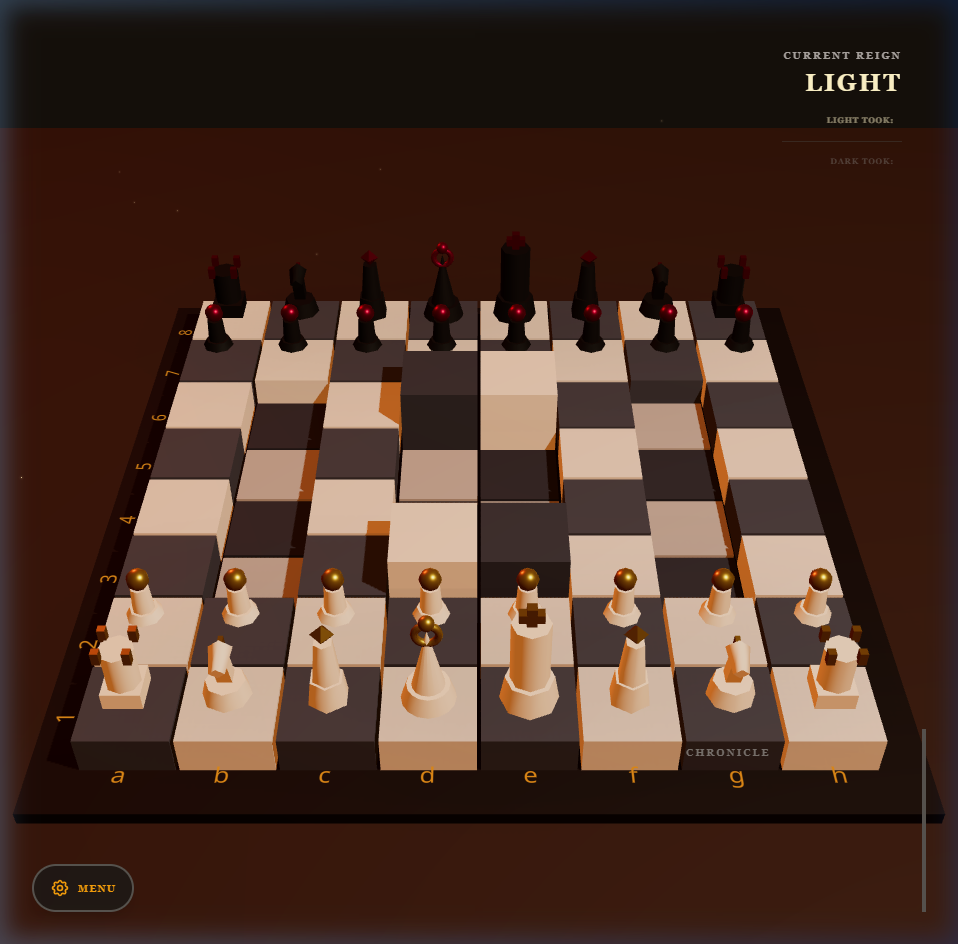
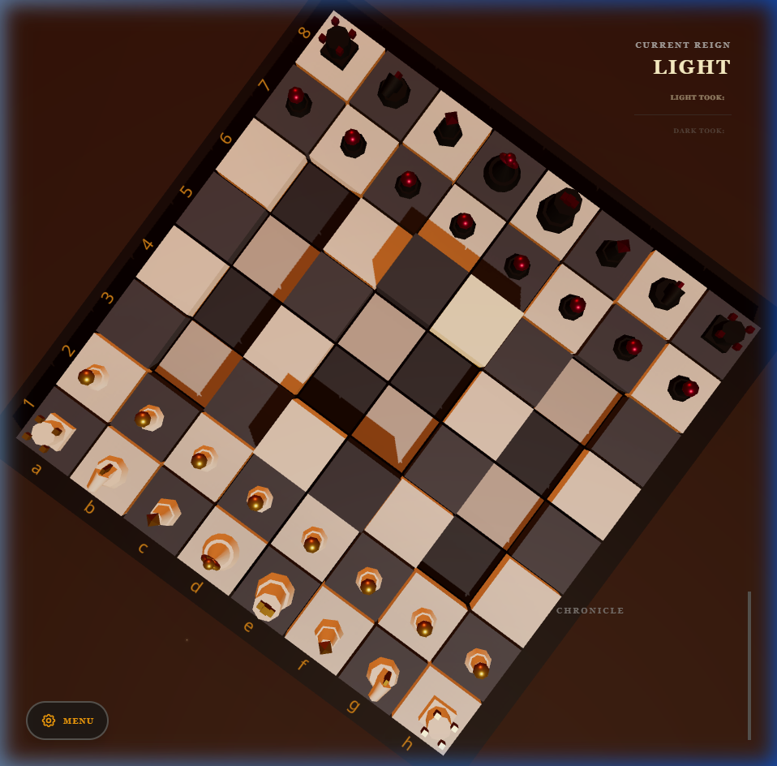
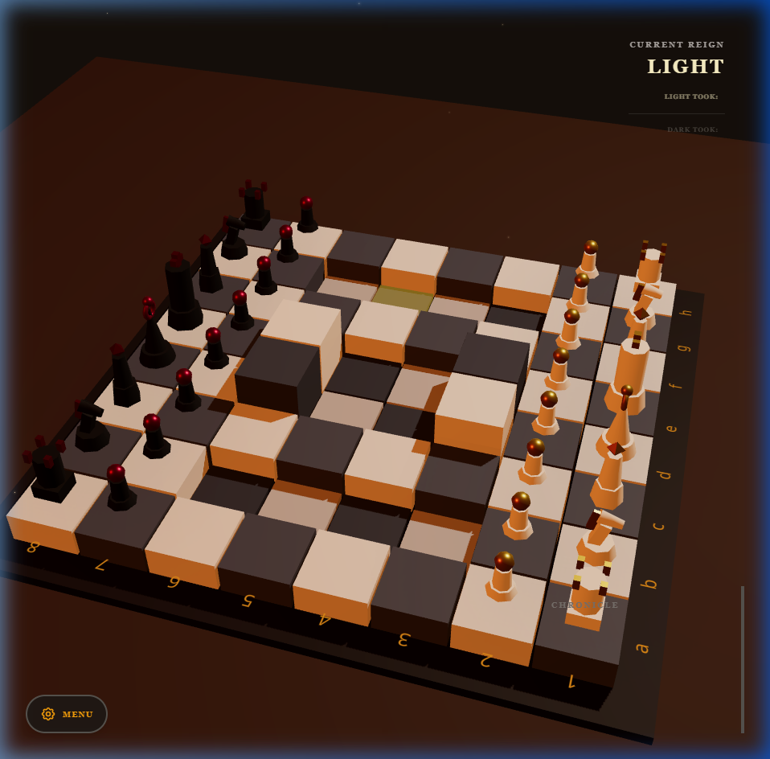
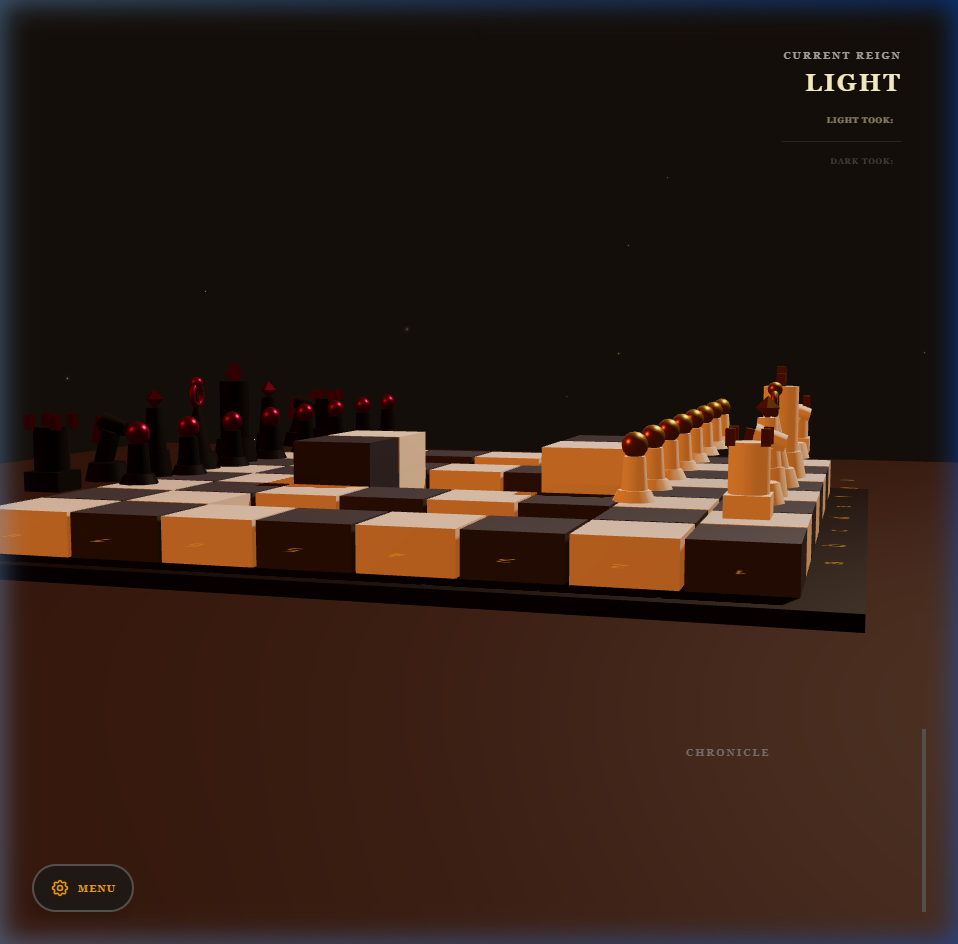
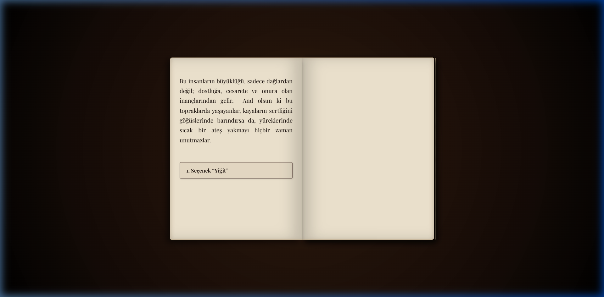

Öne Çıkan Oyun Projeleri
Solo bir geliştirici olarak mimarisini, sistem tasarımını ve temel mekaniklerini sıfırdan inşa ettiğim kapsamlı oyun projelerim.
"3rd Dimension" - 3D Tactical Chess
Rol: Bireysel Geliştirici (Solo Developer) | Platform: PC / Bağımsız Sürüm | Durum: Yayında (Itch.io)Proje Özeti: Standart satranç kurallarını "yükseklik" ve "görüş açısı (Line of Sight)" mekanikleriyle birleştiren, tam 3D taktiksel bir strateji oyunu.
Geliştirme Odakları: Custom 3D Engine Architecture, Algorithmic State Management, Local Minimax AI, P2P Networking
- Yükseklik (Elevation) Sistemi: Oyun tahtası üç farklı yükseklik seviyesinden (Çukur, Zemin, Kule) oluşur.
- Görüş Açısı (Line of Sight): Kale, Fil ve Vezir hareketleri tepeler tarafından engellenerek siper alma ve pusu kurma dinamikleri yaratır.
- Çevrimdışı Yapay Zeka (Local PvE): Özel bir Minimax algoritmik yapay zeka, standart taş değerlerinin yanı sıra 3D yükseklik avantajlarını ve merkez kontrolünü hesaplar.
- P2P Çok Oyunculu Mod: Oyuncular "Portal Rünü" ile doğrudan bir sunucu maliyeti olmadan P2P ağ üzerinden birbirine bağlanarak oynayabilir.
- 2D Motoru 3D Entegre Etmek: Çekirdek 2D satranç mantığının üzerine yükseklik haritası (Height Map) sarmalayıcısı (wrapper) yazılarak 3 boyuta uyarlandı.
- Performanslı Local AI: Limitli işlem gücü kısıtlamalarına rağmen Alpha-Beta budaması optimize edildi ve YZ'ye yükseklik tutma (Heuristic) mantığı önceliklendirildi.
- İstemci Tabanlı (Client-side) Mimari: Tamamen oyuncu cihazında çalışan sunucusuz (Serverless) tasarım optimizasyonu ve hafif veri boyutu sağlandı.




Oyun & EdTech: "Word Tycoon"
Rol: Geliştirici & Ürün ÖğrencisiProje Özeti: Eğitim ile rekabeti harmanlayan, kelime öğrenmeyi PvP (Player vs Player) bir arena deneyimine dönüştüren mobil oyun çalışması. Oyuncuların kendi seviyelerindeki rakiplerle eşleşip, doğru kelimeleri bularak lig atladığı bir yapı kurgulandı.
Tasarım & Geliştirme Süreci: Geleneksel dil öğrenme uygulamalarının tekdüzeliğini kırmak amacıyla, kelime pratiklerini maç mantığına oturttum. Oyuncunun maça "Altın" (Entry Fee) ödeyerek girmesi ve kazandığı kaynaklarla yeni Power-Up'lar alması üzerine temel bir Core Loop tasarlandı.
- Oyun Ekonomisi: Maç giriş ücretlerinin, ödüllerin ve power-up maliyetlerinin dengelenmesi üzerine pratikler.
- User Flow Dizaynı: Matchmaking ve lobi akışlarının kullanıcıyı yormayacak sadelikte tasarlanması.
- Oyunlaştırma (Gamification): Eğitim sürecini zorunlu bir görevden ziyade rekabetçi bir amaca dönüştürme denemeleri.
- Rövanş Psikolojisi: Kayıp sonrası oyuncunun tekrar maça girme isteğini destekleyecek UI/UX yönlendirmeleri.
- Kısa Oturumlar: Mobil platforma uygun, 5-10 dakikalık hızlı maç dizaynları.

.jpeg)
.jpeg)
.jpeg)
.jpeg)

.jpeg)

.jpeg)
.jpeg)
.jpeg)
.jpeg)
.jpeg)

.jpeg)

.jpeg)
.jpeg)
.jpeg)
.jpeg)


.jpeg)
.jpeg)
Etkileşimli Hikaye: "Tales of Nart"
Rol: Geliştirici & ProgramcıProje Özeti: Klasik destanlardan ilham alan etkileşimli bir 3 boyutlu hikaye projesi. Özel render teknikleriyle metin tabanlı fantastik bir kitabın fiziksel yapısını simüle etmeyi amaçlayan deneysel bir prototip.
Uygulanan Geliştirmeler:
- Dinamik Sayfalama Mantığı: Metinlerin sayfa dışına taşmasını önlemek için dinamik görünümlü bir paragraf ölçüm ve aktarım sistemi kodlandı.
- Daktilo Animasyonu: Yazıların eşzamanlı belirmesi yerine, tıklama ve basılı tutma durumlarına göre hızlanan harf akışı sağlayan bir render sistemi geliştirildi.
- Karar Ağacı Yapısı: Oyuncunun seçimlerine bağlı olarak hikaye akışını yönlendiren "Node" (düğüm) tabanlı JSON veri mimarisi entegre edildi.
- Dalgalanan ve daha derin diyalog ağaçlarının JSON dosyalarına uyarlanması.
- Sayfa çevirme ve rüzgar hışırtısı gibi temel işitsel geri bildirimlerin eklenmesi.

